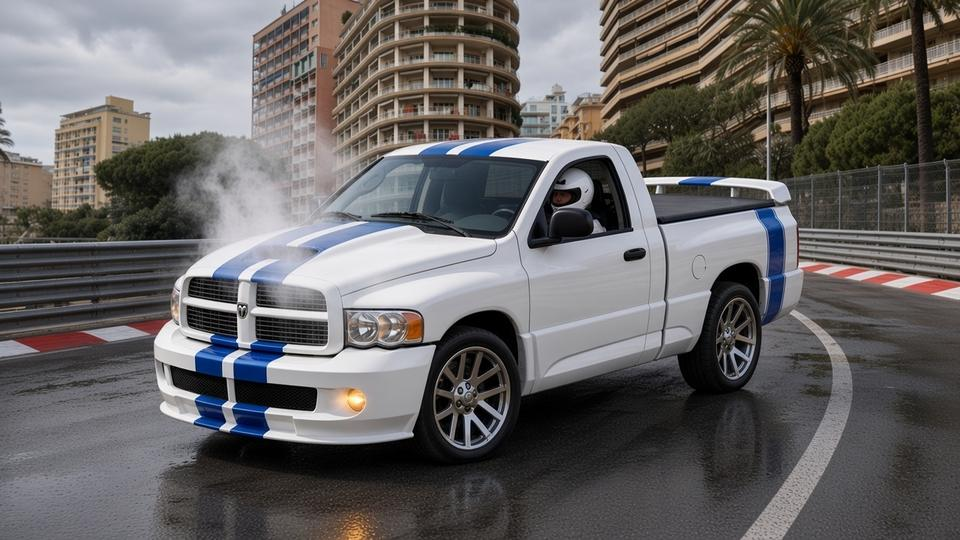
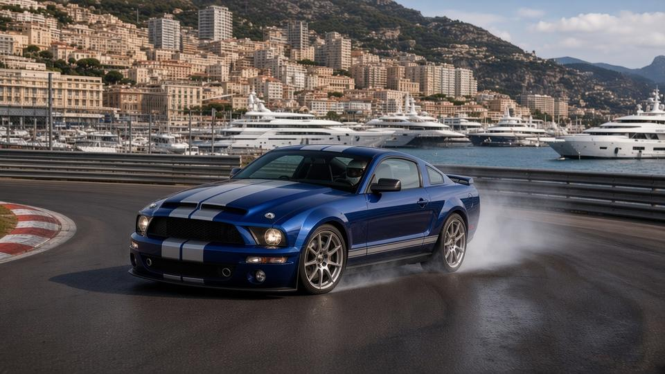

Final results
| Pos | Player | Car | Time | Gap | Pts |
|---|---|---|---|---|---|
| 1 | thatonem4 | Shelby GT500 KR 40th '08 | 20:12.632 | Winner | 10 |
| 2 | zehnx1006 | Subaru Impreza WRX S '08 | 20:25.992 | +13.360 | 8 |
| 3 | lacee5238 | Maserati GranTurismo S '09 | 20:50.569 | +37.937 | 6 |
| — | jimmykim3938 | Ram SRT-10 Commemorative '05 | DNF (overheating, the radiator fan failed and the V10 overheated in the slow streets) | — | 0 |
Group-round points: 1st 10, 2nd 8, 3rd 6, 4th 4. A DNF scores 0.
The venue
Weather
| Lap | Conditions |
|---|---|
| Lap 1 | 🌦️ Drizzle |
| Lap 2 | 🌦️ Drizzle |
| Lap 3 | 🌤️ Drying track |
| Lap 4 | 🌤️ Drying track |
| Lap 5 | 🌤️ Drying track |
| Lap 6 | 🌤️ Drying track |
| Lap 7 | 🌤️ Drying track |
| Lap 8 | ☀️ Clear and dry |
| Lap 9 | ☀️ Clear and dry |
Starting grid
| # | Player | Car | HP | Torque | Weight | Drive | Factory tires |
|---|---|---|---|---|---|---|---|
| 1 | jimmykim3938 | Ram SRT-10 Commemorative '05 | 500 | 525 lb-ft | 5,099 lb | RWD | Pirelli Scorpion Zero (305/40R22 / 305/40R22) on 22-in polished wheels |
| 2 | zehnx1006 | Subaru Impreza WRX S '08 | 252 | 288 lb-ft | 3,075 lb | AWD | factory 225/40R18 on 18x7.5 anthracite GT1 alloys (tyre make not verified) |
| 3 | thatonem4 | Shelby GT500 KR 40th '08 | 540 | 510 lb-ft | 3,905 lb | RWD | Goodyear Eagle F1 Supercar, KR-exclusive compound (255/45ZR18 / 285/40ZR18) on 18x9.5 machined KR wheels |
| 4 | lacee5238 | Maserati GranTurismo S '09 | 433 | 361 lb-ft | 4,145 lb | RWD | Pirelli P Zero (factory fitment) (245/35ZR20 / 285/35ZR20) |
Grid drawn at random. Everyone races their Pick 1 car.
Build-up
Race 3 is on the streets of Monte Carlo at the Circuit de Monaco: 2.07 miles run clockwise, from Sainte Dévote up to Casino Square, down through Mirabeau and the hairpin, through the tunnel and round the harbour to Rascasse. Nine laps.
jimmykim3938 has pole, with zehnx1006 alongside, thatonem4 3rd and lacee5238 last. Drizzle falls for two laps, the track dries over the next five, then it's clear and dry for the last two.
Lap by lap
Lap 1
zehnx1006's Subaru takes the lead from pole-sitter jimmykim3938 in the drizzle and leads thatonem4 by 1.7s. lacee5238 is 3rd, 4.2s back, and jimmykim3938's Ram drops to 4th, 29.3s back.
| Pos | Player | Car |
|---|---|---|
| 1 ▲1 | zehnx1006 | Subaru Impreza WRX S '08 |
| 2 ▲1 | thatonem4 | Shelby GT500 KR 40th '08 |
| 3 ▲1 | lacee5238 | Maserati GranTurismo S '09 |
| 4 ▼3 | jimmykim3938 | Ram SRT-10 Commemorative '05 |
Laps 2–4

thatonem4 takes the lead from zehnx1006 on lap 2, and the track starts to dry on lap 3. jimmykim3938's Ram overheats on lap 4 and he is out. thatonem4 leads by 4.7s after lap 4.
| Pos | Player | Car |
|---|---|---|
| 1 ▲1 | thatonem4 | Shelby GT500 KR 40th '08 |
| 2 ▼1 | zehnx1006 | Subaru Impreza WRX S '08 |
| 3 | lacee5238 | Maserati GranTurismo S '09 |
Lap 5

thatonem4 spins at Rascasse and loses 10.3s. zehnx1006 takes the lead back and is 3.5s ahead.
| Pos | Player | Car |
|---|---|---|
| 1 ▲1 | zehnx1006 | Subaru Impreza WRX S '08 |
| 2 ▼1 | thatonem4 | Shelby GT500 KR 40th '08 |
| 3 | lacee5238 | Maserati GranTurismo S '09 |
Lap 6
thatonem4 runs wide at Sainte Dévote and loses 1.4s, but closes to 0.4s behind zehnx1006.
| Pos | Player | Car |
|---|---|---|
| 1 | zehnx1006 | Subaru Impreza WRX S '08 |
| 2 | thatonem4 | Shelby GT500 KR 40th '08 |
| 3 | lacee5238 | Maserati GranTurismo S '09 |
Lap 7
thatonem4 passes zehnx1006 for the lead and is 2.7s ahead.
| Pos | Player | Car |
|---|---|---|
| 1 ▲1 | thatonem4 | Shelby GT500 KR 40th '08 |
| 2 ▼1 | zehnx1006 | Subaru Impreza WRX S '08 |
| 3 | lacee5238 | Maserati GranTurismo S '09 |
Laps 8–9
The track is dry. thatonem4 sets the fastest lap of the race, a 2:06.0 on the last lap, and wins by 13.4s from zehnx1006. lacee5238 is 3rd, 37.9s back.
| Pos | Player | Car |
|---|---|---|
| 1 | thatonem4 | Shelby GT500 KR 40th '08 |
| 2 | zehnx1006 | Subaru Impreza WRX S '08 |
| 3 | lacee5238 | Maserati GranTurismo S '09 |
thatonem4 wins Group 7 Pick 1 Race 3 at Circuit de Monaco in the Shelby GT500 KR 40th '08, 20:12.632 for 9 laps, 13.360 s ahead of zehnx1006.
Points: 1. thatonem4 (10 pts), 2. zehnx1006 (8 pts), 3. lacee5238 (6 pts); jimmykim3938 DNF (overheating, the radiator fan failed and the V10 overheated in the slow streets on lap 4, 0 pts).
Fastest lap: thatonem4, 2:06.016 on lap 9.
Lap times
| Player | Car | L1 | L2 | L3 | L4 | L5 | L6 | L7 | L8 | L9 | Incidents |
|---|---|---|---|---|---|---|---|---|---|---|---|
| thatonem4 | Shelby GT500 KR 40th '08 | 2:19.645 | 2:15.160 | 2:14.509 | 2:14.166 | 2:24.341 | 2:17.021 | 2:13.706 | 2:08.068 | 2:06.016 | L5 full spin at Rascasse, +10.3 s; L6 ran wide at Sainte Dévote, +1.4 s |
| zehnx1006 | Subaru Impreza WRX S '08 | 2:17.979 | 2:19.933 | 2:14.630 | 2:15.637 | 2:16.112 | 2:20.104 | 2:16.853 | 2:13.128 | 2:11.616 | Clean |
| lacee5238 | Maserati GranTurismo S '09 | 2:22.177 | 2:20.106 | 2:19.058 | 2:20.100 | 2:21.757 | 2:20.409 | 2:20.112 | 2:15.532 | 2:11.318 | L5 missed shift, +1.1 s |
| jimmykim3938 | Ram SRT-10 Commemorative '05 | 2:47.319 | 2:43.437 | 2:36.005 | — | — | — | — | — | — | L4 DNF, overheating, the radiator fan failed and the V10 overheated in the slow streets |